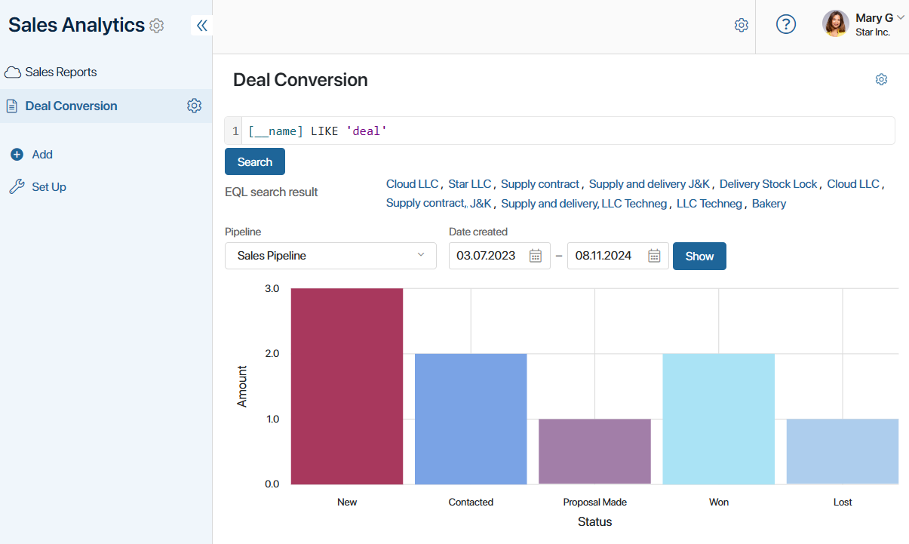
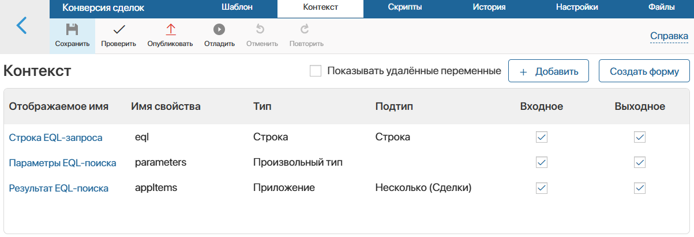
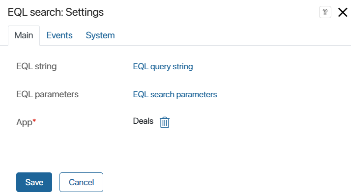
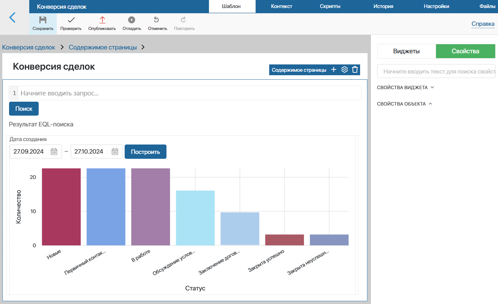

The EQL search widget is placed on app forms and pages and enables search queries in EQL365 (BRIX Query Language). Users will be able to apply operations and functions of the developed syntax, set complex data selection with multiple conditions, and search by parameters of any app of the system.
Configure EQL search using a widget
The EQL search widget is a search bar where users specify an EQL query. The query is searched using a script that is created in the interface designer. The user runs it on a page or form, for example, by clicking on a customized button. The search result is displayed in a special added variable.
Let’s take a closer look at setting up an EQL search in a widget. For example, let’s place the widget on a separate Deal Conversion page, where the chart of item status change is displayed. Let’s configure the search on the page by the parameters of the Deals app.

Step 1. Add context variables
To configure the EQL search widget, create special context variables in the interface designer. They are used for mapping to the widget settings, as well as for displaying search results.
- In the interface designer, go to the Context tab.
- Add properties. The names and codes of the variables are given for example. The data types must be the same as those specified:

- EQL query string (
eql). String type property. It is specified in the widget settings and is used to enter EQL query. - EQL search parameters (
parameters). Arbitrary type property. It is specified in the widget settings and used to pass the request from the widget to the script that processes it. - EQL search result (
appItems). App (Many) type property specifying the app whose parameters will be searched. In our example, we use the Deals app. The property is added to the modeling canvas to display all items that match the conditions of the EQL query entered by the user.
Step 2. Place and configure the EQL search widget
The next step is to configure the EQL search widget. To do this:
- Go to the Template tab and drag the widget from the right panel of the interface designer to the canvas where you want to place the search bar.
- In the opened window, on the Main tab, specify the widget settings:

- EQL string. Map the option to the variable of the String type added in step 1. Click <Not defined> and select a property from the list. In our example, it is EQL query string.
- EQL parameters. Map the option to the Arbitrary type variable added in step 1. Click <Not defined> and select a property from the list, such as EQL search parameters.
- App*. Select the app whose the parameters will be searched based the conditions of the specified EQL queries. In our example, it is the Deals app.
- On the Events and System tabs, you can set system settings that are the same for all widgets. They allow you to control widget visibility and access, customize hover behavior, etc. Read more about it in the System widget settings article.
- Save the parameters set in the widget.
Step 3. Set up the EQL query processing script
The search by the EQL query composed by the user is performed using a script. You need to prepare its execution and processing in the interface designer. For example, users can click on a button to load an EQL query and view the search results.
To set this up, follow the steps below:
- On the Widgets tab on the right panel of the interface designer, find the Button widget. Drag it to the canvas, for example, place the button under the EQL search bar.
- In the opened window, customize the display of the button and set its name, for example, Search.
- In the Executed script field, click New and specify the name of the script that will be run when the button is clicked, for example, Click.
- Click the Open button that appears in the field to go to the Scripts tab and specify the following command:
async function Click (): Promise<void> {
Context.data.appItems = await Context.fields.appItems.app.search().where(Context.data.eql!, Context.data.parameters).all();
}
Step 4. Customize the search result display
According to the specified script, the app items found by the EQL query are written to the EQL search result variable created in step 1. It can be used in the interface designer. For example, let’s display the search result on the page. To do this:
- Click the Template tab and on the right panel, click Properties.
- Drag and drop the EQL search result property onto the canvas. For example, place it under the created Search button.
- In the settings window that opens, in the Read only field, check Yes to allow users to only view the items displayed in the property.
- Set other settings. For example, enable the Hide if the field is empty option to show the field with the found items only after the EQL query is processed.
- Save the specified settings.
Step 5. Publish the configured interface
The page settings in the interface designer for our example page might look like this:

To make the page available to users, click Save and Publish in the top panel of the interface designer.
Users can now use EQL search to search for items in the Deals app.
Found a typo? Select it and press Ctrl+Enter to send us feedback